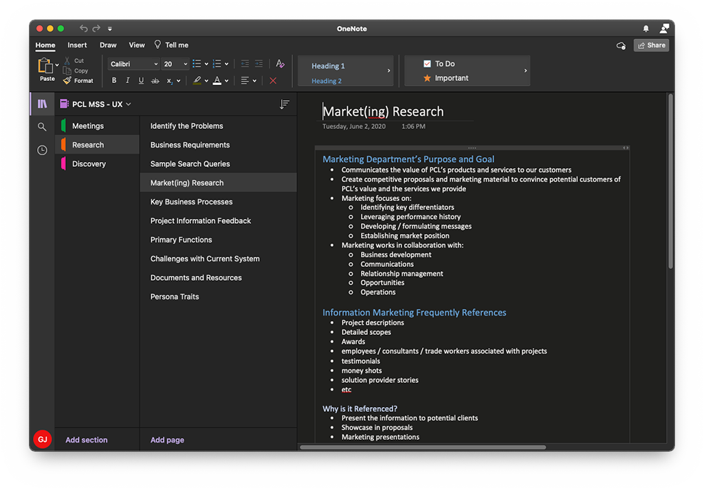
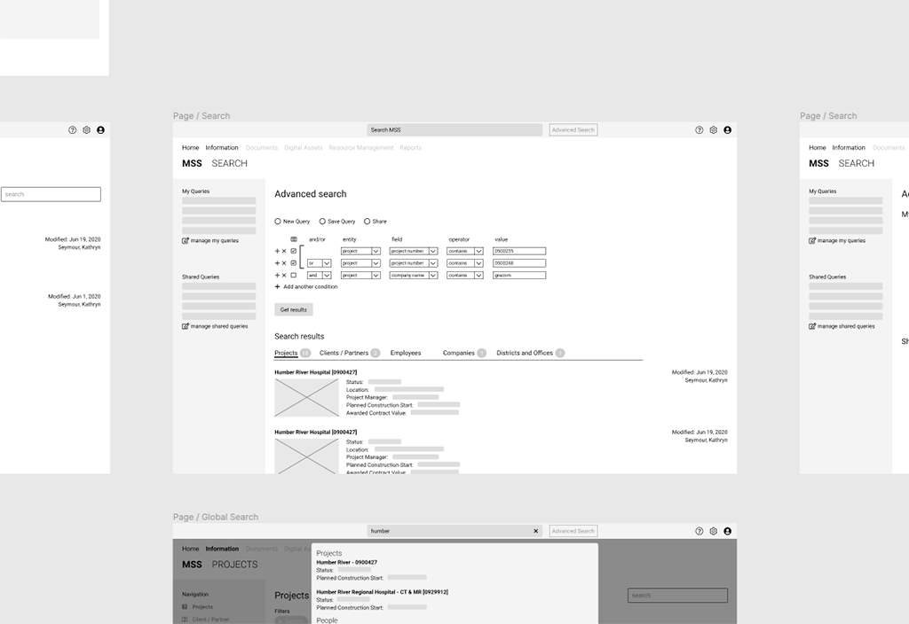
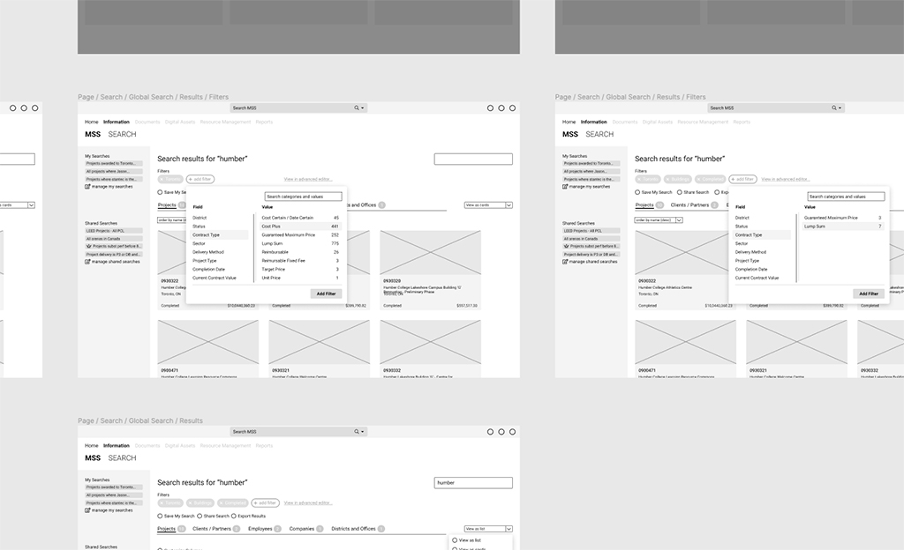
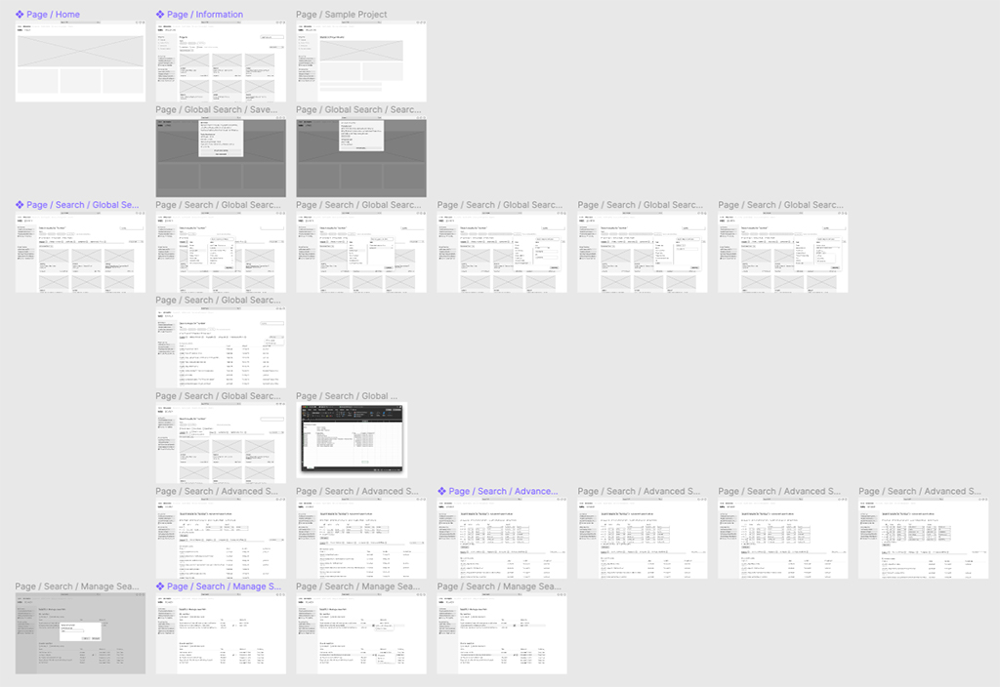
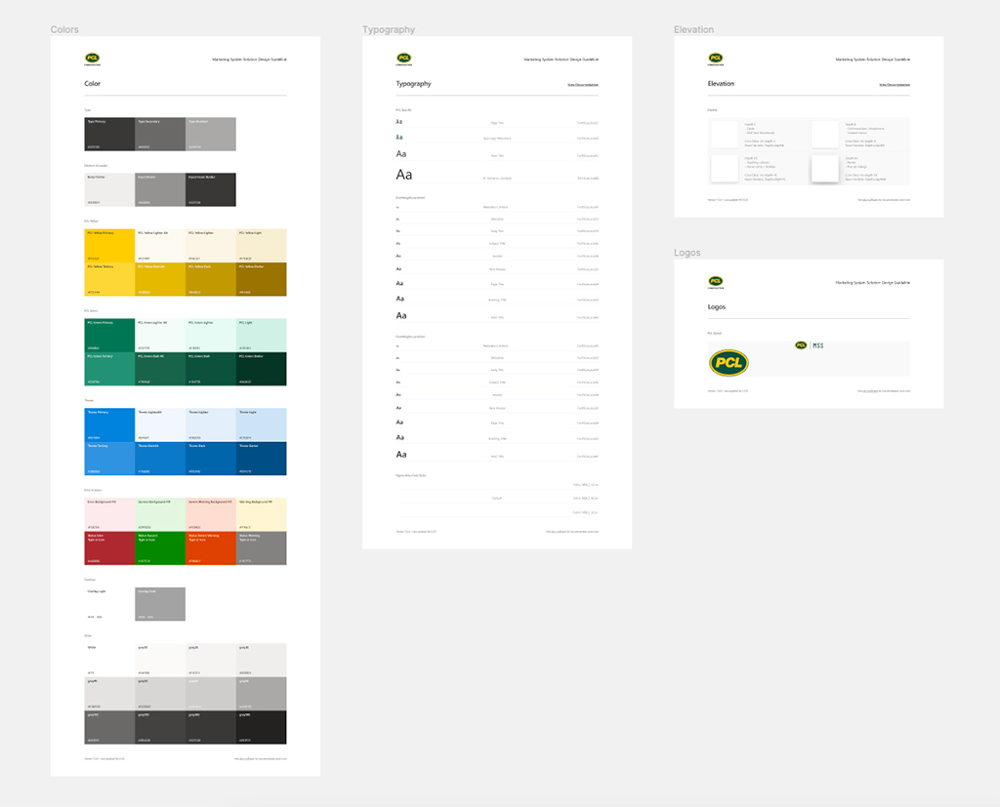
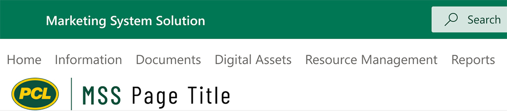

MARKETING SYSTEM SOLUTION
This project started in May 2020 and is still ongoing. My role on this project is to be both UX Researcher and UI Designer.
I’m a part of a small team of four or five people and my roles include research, visual design, and interaction design. I also worked with PCL’s Communications department to ensure the final product complied with their corporate standards for branding.
The Challenge
PCL is a general contracting company that conducts more than $9 billion worth of work annually, has over 1000 projects under its belt, and has operations in North America as well as Australia. [Go to pcl.com] This has provided PCL the ability to bid on projects in many different sectors, with a vast catalogue of work experience to glean from.
“The information within needs to be relevant, accurate, and focused… millions of dollars worth of work could be at risk.”
Herein lies the challenge: potential clients and owners need to know what experience a General Contractor (GC) can provide. This data is provided to them, via PCL’s Marketing department, as a project proposal. The information within needs to be relevant, accurate, and focused to the client’s needs to even be considered as a candidate for a bid. If any of those needs are not met, millions of dollars worth of work could be at risk.
PCL, for the past ten years or so, has been using a third party product called Deltek Vision. It stores all the information related to PCL’s projects, offices, employees, company contacts, and more in one application. Being over ten years old, Deltek Vision is getting long in the tooth and the company recognized the need for a replacement.
The Approach
There were several different avenues of information we could pull from. This was not the first crack at replacing Deltek Vision within PCL, so we started off by studying previous business requirements to gain at least a little bit of insight from the past.
MSS was intended to be a direct replacement for Deltek Vision, so we also took a deep dive into the application itself. This provided us insight into how our clients and users are already retrieving data and how the data is logically separated.
“…we knew a better solution could be found but we had to get past those biases to understand the problem.”
We also studied other third party applications to gain an understanding of how they’ve attempted to tackle this challenge. We had access to PCL employees who used to work at other companies in the construction sector, so they provided us insight and screenshots of the applications they used to use. Not to mention the internal applications that PCL provides: such as its company intranet, since it provides project and people information already but at a higher level than what MSS required.
Finally, we knew we needed to talk to users. One of the cons of building a replacement application is that we have to get past the biases of the current system. We couldn’t simply build a carbon copy of the existing application, we knew a better solution could be found but we had to get past those biases to understand the problem and start designing an application that meets our clients’ needs.
The Discovery
After several rounds of discussions with subject matter experts (SMEs) and general users of the application, we identified three general types of users (to date) and developed personas for them:
-
Director of marketing. This person is in charge of an entire marketing department, or potentially several marketing departments across company districts. They do gather information themselves, but only occasionally and are more likely to rely on their employees to do the research. These would be our more casual users.
-
Senior Marketing Coordinator. This person has years of experience building proposals and a ton of understanding of PCL’s current applications and systems. The information they contain is invaluable since they have such intimate knowledge of the system. Having said that, they provide the greatest challenge because their processes are so ingrained. Working past cognitive biases can be a challenge at times.
-
Proposal Coordinator. This person is deep into building a project proposal, but because this is commonly a lower-ranked position, they also have the least experience of the three. They know what they need to do, but may not know how to retrieve the information they’re looking for.

Once we discovered who our users are, we began to dive into understanding the problem by talking to them and asking them questions about their day-to-day processes, the process of building a project proposal, and what the pain points or frustrations are in the current system.
In those discussions, we kept hearing “search”. Search was a significant roadblock in Deltek Vision: it was too complex to use, too obfuscated to find, and too many different ways of conducting a search. Deltek provides the ability to use a query builder to develop complex searches. We heard from our users that this query builder is powerful, and works well for power users, but has too steep a learning curve for new or less technically inclined users.
We also heard from them that time is key. Currently, they use Deltek Vision to search for data, but we also found out that they were required to query information via other means. They would either frequent PCL’s Intranet for data, or they would send mass emails to other marketing coordinators, asking if they might have the information they’re looking for. We dug a bit deeper and discovered they do this because the data in Deltek Vision may not even be accurate, either because there are so many fields to fill out, or it’s too complicated to find.
Understanding the Problem
After gathering all this feedback, and diving deeper into PCL’s existing applications, we started to see the problem unfold; users are frustrated with the complication of search and the inaccuracy of the data within. From this we built our problem statement:
“A marketing coordinator needs to be able to search for, and easily identify, information related to projects, people, contacts, and office information; all for the purpose of developing a project proposal. They need to trust that the information is up-to-date, accurate, and relevant.”
Requirements
Things started to come together now that we had context for what we needed to build.
We knew that this app needed to be web-based, that was a requirement from the beginning. Beyond that, we knew that an intuitive, yet powerful, search experience needed to be the highest priority.
We also wanted to maintain consistency between other applications. We identified that the users of this app make frequent use of the company’s intranet. That app was also undergoing its own revamp so we reached out to the product team to gain some understanding of the design and requirements. We found out that they were using Microsoft’s Sharepoint Online platform, which more-or-less dictates that the UI follow Microsoft’s Fluent Design System. [Go to microsoft.com] We decided, for the sake of consistency, that we would adopt a UI similar to Fluent Design as well.
Vetting the Layout
Business requirements had already determined the high level content that needed to be included. Now we needed to focus on how that would organized and presented. We started to build out our information architecture and wireframes. Then we started to walk our SMEs through these wireframes to gather their feedback and visually vet the concepts past them to make sure we understood their needs and confirmed the feedback we were receiving was accurate.
“When they saw the initial concept, they weren’t impressed. They reiterated to us that it needs to be simple to use, yet powerful.”
Our wireframes went through several iterations based on that feedback. We started by focusing on advanced search and trying to present it in a way that made sense to the user. When they saw the initial concept, they weren’t impressed. They reiterated to us that it needs to be simple to use, yet powerful.
We went back to the drawing board, looked at how the company intranet implemented search, looked at third party options and how they implemented search. The end result was a tag-based approach.
The user could start by providing a search term. The application will return a given number of results. The user can then further narrow those results by adding filters or tags to the query. They can limit the results by sector, location, project value, etc. This will allow them to build complex searches in a visually non-complex way.
So a search that starts out as:
- Projects in Toronto
Can become:
- Projects in Toronto
- Over $10 million
- That include commercial and residential
- And floors greater than 20
This will narrow down the results so the user can find the type or types of projects they’re looking for.
We also identified that search needed to be available from anywhere. Deltek Vision provided numerous ways to search but only one was available globally and the results were pretty basic. Any deeper dive required going to another screen or clicking on a second button before any search could be performed.
We decided that a global search should be easily accessible and somewhat intuitive. However, if you wanted to refine the results, it wouldn’t require going to another page, you could simply add more filters; start off simple, make it complex if the user wants to.
Next Steps…
This is an ongoing project. Search was just the first phase, now we’re on to the layout of the content itself. The business is in the process of determining what content needs to be included in each section. Once the content has been determined, we will need to conduct more research to determine how that content should be exposed. How should it be grouped together? Is a textbox appropriate or would it be better suited in a list? Is one subset of information more important than the others? We’ll be answering those questions by conducting card sorts, user interviews, and discussions with our SMEs. The information architecture will be revised and wireframes adapted as well.
There’s discussions that more groups may be invited to use the app, if that is the case, more research and analysis will need to be conducted. More user personas will need to be developed and potentially journey maps if time permits.
There’s always room for improvement, which is why listening to our users is so important.
 